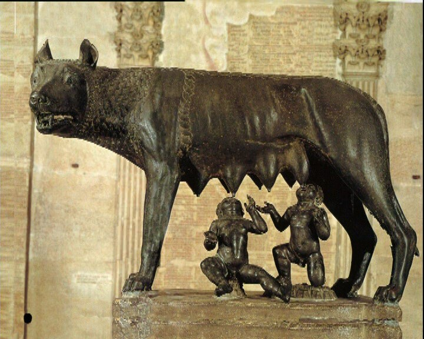
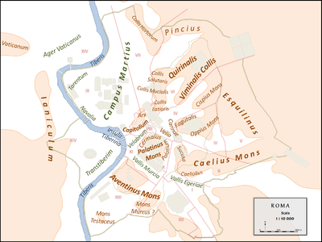

De meest beroemde legende over het ontstaan van Rome is het verhaal over Romulus en Remus. Romulus and Remus waren de zonen van Rhea Silvia. Rhea Silvia was echter tot Vestaalse Maagd gemaakt door koning Amulius. Dat deed hij omdat Rhea Silva de dochter was van Numitor, de echte koning die verjaagd was door Amulius. Nadat Amulius erachter kwam dat Rhea Silva een tweeling had, liet Amulius Rhea Silva arresteren en nam hij de tweeling af. De tweeling werd vervolgens in een mandje in de rivier de Tiber gelegd. Hte mandje kwam ergens vast te zitten in het riet. Een wolvin zag de tweeling en zoogde hen. Later werd de tweeling door een herder gevonden, enhij voedde ze op als zijn eigen zonen. Later kwamen Romolus en Remus te weten wie ze echt waren. Romolus en Remus verdreefden Amulius en zorgden ervoor dat Numitor weer de koning werd. Romulus en Remus wilden een stad stichten maar ze waren het niet eens met de locatie van stad. De locatie lieten ze uiteindelijk bepalen door een teken van de goden, maar ook over het teken konden de broers het niet eens worden. Toen Remus over de stadsmuur van Romulus sprong en zei:'Moet dit ons beschermen?', werd romulus zo boos dat hij Remus doodde. Romulus werd de koning en de stad werd naar hem vernoemd; Rome. Klik hier voor meer informatie over het ontstaan van Rome
Het onstaan van Rome
Titel van de kop
inlever test Maecenas tempus, tellus eget condimentum rhoncus, sem quam semper libero, sit amet adipiscing sem neque sed ipsum. Nam quam nunc, blandit vel, luctus pulvinar, hendrerit id, lorem. Maecenas nec odio et ante tincidunt tempus. Donec vitae sapien ut libero venenatis faucibus. Nullam quis ante. Etiam sit amet orci eget eros faucibus tincidunt. Duis leo. Sed fringilla mauris sit amet nibh. Donec sodales sagittis magna. Sed consequat, leo eget bibendum sodales, augue velit cursus nunc, quis gravida magna mi a libero. Fusce vulputate eleifend sapien. Vestibulum purus quam, scelerisque ut, mollis sed, nonummy id, metus. Nullam accumsan lorem in dui. Cras ultricies mi eu turpis hendrerit fringilla. Vestibulum ante ipsum primis in faucibus orci luctus et ultrices posuere cubilia Curae; In ac dui quis mi consectetuer lacinia.
Nam pretium turpis et arcu. Duis arcu tortor, suscipit eget, imperdiet nec, imperdiet iaculis, ipsum. Sed aliquam ultrices mauris. Integer ante arcu, accumsan a, consectetuer eget, posuere ut, mauris. Praesent adipiscing. Phasellus ullamcorper ipsum rutrum nunc. Nunc nonummy metus. Vestibulum volutpat pretium libero. Cras id dui. Aenean ut eros et nisl sagittis vestibulum. Nullam nulla eros, ultricies sit amet, nonummy id, imperdiet feugiat, pede. Sed lectus. Donec mollis hendrerit risus. Phasellus nec sem in justo pellentesque facilisis. Etiam imperdiet imperdiet orci. Nunc nec neque. Phasellus leo dolor, tempus non, auctor et, hendrerit quis, nisi.
De persoonlijkheid is een begrip uit de psychologie en omvat een dynamisch en georganiseerd geheel van karakteristieken (voelen, denken, doen) die aan een persoon kunnen worden toegekend. Dit geheel van eigenschappen beschrijft de manier waarop een persoon in verschillende situaties zal reageren, de manier waarop hij denkt, en waardoor hij gemotiveerd zal worden.
De term persoonlijkheid is afgeleid van het Latijnse 'persona' of masker, waardoor ook de connotatie is ontstaan dat persoonlijkheid te maken heeft met het uiterlijke gedrag, dat wat de omgeving van iemand ziet. Het verschil met 'karakter' is dat persoonlijkheid door opvoeding en omgeving beïnvloed worden en pas vorm krijgt tijdens de adolescentie, terwijl karakter vaak meer als de biologische aanleg, de (aangeboren, vrij onveranderlijke) aard van die persoon wordt beschouwd.
De persoonlijkheid wordt ook omschreven als het unieke en stabiele patroon van psychologische en gedragskenmerken waardoor de ene mens zich van de andere onderscheidt. Eenvoudig uitgedrukt: de manier waarop iemand met uiteenlopende situaties omgaat of het karakteristieke gedragspatroon dat iemand in verschillende situaties vertoont, noemen we persoonlijkheid. Onderzoek laat zien dat de persoonlijkheid gedurende de levensloop kan veranderen ten gevolge van levensgebeurtenissen.